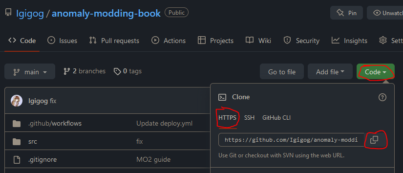

Contributing
First way to contribute
You can easily suggest edits by clicking on the button at the top right

Second way to contribute
This book is written using mdBook. To contribute to this book, you will need:
VSCodium or VSCode is highly recommended to use. Although it is optional, I will assume you are using it.
Below I describe the setup steps needed to run and contribute to this book. But before that, go and install VSCodium and Git.
Forking book repository
Contributing to this book follows the standard “Pull Request” workflow. That basically means that you will have your own copy of the book, and you will ask us to pull your changes into the main repository.
Here is the overview of steps needed for contributing:
- Copy (“fork”) the main repository
- Download your copy of repo
- Add your changes to your copy
- Upload your changes
- Open the Pull Request to merge your changes into main repository
Welp, let’s get started. I hope you already have a GitHub account.
Forking
-
Go to the main repo
-
Press the fork button

-
Create the fork

-
You’re awesome
Downloading your repo
-
Open the folder you want to download into in VSCodium. In my case, it will be Desktop.

-
Open Powershell Terminal session
-
Copy the link to your repo.

-
Run the following command in your Powershell Terminal with your link instead of LINK.
git clone LINK -
You’re awesome.
Dependencies
To run the local version you need to install dependencies. This can be done in different ways
CTRL+Shift+B->Install Rust(ChooseWindowsorUnix) - To install RustCTRL+Shift+B->Install Dependencies- Various necessary dependencies
Or
- Download and install Rust
- Install the following dependencies:
-
Preprocessor for mdBook to add Material Design admonishments
cargo install mdbook-admonish -
Preprocessor for mdBook to add mermaid support
cargo install mdbook-mermaid -
(Optional) Backend for mdBook which will check your links for you
cargo install mdbook-linkcheck2
Running local copy
CTRL+Shift+B->Build Local mdBook Server
Or
- Download latest mdbook from Github Releases.
- Drop
mdbook.exein thedistfolder of your copy. - Run
run.bat. In case it doesn’t open by itself, open localhost:3000 in your browser. - Done. You’re awesome.
Uploading your changes
-
Set your git up. Here’s a great guide
-
Add your changes using VSCodium git tab. Open git tab, hover over “Changes” line and press “+”.

-
Add a nice message and press “✔” to commit your changes

-
You should now be able to publish your changes

Creating Pull Request
-
In main book repository, open “Pull Requests” tab and press “New pull request”

-
Press “compare across forks”. Choose your repository and press “Create pull request”.
-
You’re awesome. Probably. Now ping Igigog#6387 in Discord to get your pull request reviewed.
-
Done. Your changes are added to the main book.